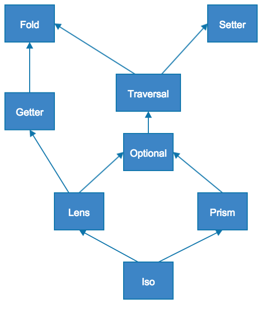

Optics
Here is a diagram to visualise how optics relate to each other:

Optic Composition Table
Almost all optics compose with the other optics. The composition of one type and itself results in the same type of optic.
| Fold | Getter | Setter | Traversal | Optional | Prism | Lens | Iso | |
|---|---|---|---|---|---|---|---|---|
| Fold | Fold | Fold | Fold | Fold | Fold | Fold | Fold | Fold |
| Getter | Fold | Getter | - | Fold | Fold | Fold | Getter | Getter |
| Setter | - | - | Setter | Setter | Setter | Setter | Setter | Setter |
| Traversal | Fold | Fold | Setter | Traversal | Traversal | Traversal | Traversal | Traversal |
| Optional | Fold | Fold | Setter | Traversal | Optional | Optional | Optional | Optional |
| Prism | Fold | Fold | Setter | Traversal | Optional | Prism | Optional | Prism |
| Lens | Fold | Getter | Setter | Traversal | Optional | Optional | Lens | Lens |
| Iso | Fold | Getter | Setter | Traversal | Optional | Prism | Lens | Iso |